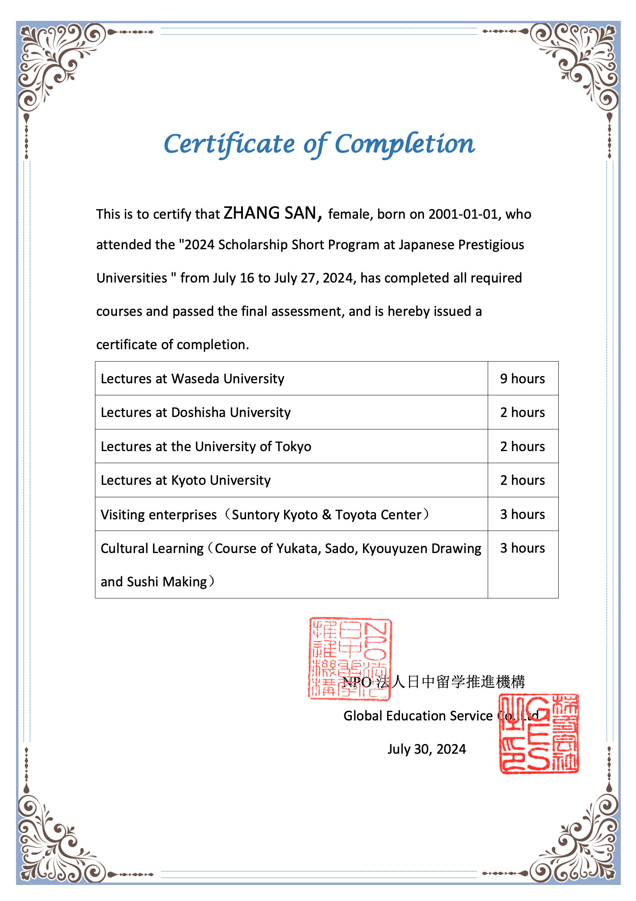

学院通知 · 校园活动
【大川视界】关于选派本科生参加2024年暑期日本东京大学、早稻田大学日本名校奖学金访学项目（非学分）的通知
发布时间：2024-03-26
根据学校“大川视界”大学生海外访学计划的相关政策，即日起启动2024年暑期日本东京大学.早稻田大学日本名校奖学金访学项目（非学分）的报名工作，报名截止日期：4月21日。现就有关事项通知如下： 一、项目时间 学生可选以下任意一期参加 第一期：2024年7月16日 – 7月27日（12天） 第二期：2024年7月30日 – 8月10日（12天） 二、项目简介 项目由日中文化交流中心以及NPO日中留学推进机构共同主办，力求通过名校讲座、学生交流、企业访问、传统文化体验、结业汇报等五个方面共计21个学时的相关安排，让参加同学全方位了解日本文化，同时提升自身的国际化视野以及跨文化思维。 项目详情见附件2：2024年暑期日本东京大学、早稻田大学奖学金访学项目（非学分）介绍。 三、项目收获 项目在日期间，NPO日中留学推进机构将为每位顺利完成项目的学员颁发结业证书及 5万日元现金（约2500元人民币/人）的 奖学金。 图：项目证书样图 四、项目费用 项目总费用： 约1.76万元人民币/人 费用包括： 大学课程费、大学管理费、企业参访费、校园参访交流费、文化体验费、住宿费、境外集体活动大巴使用费、公共交通费、保险费、接送机费以及项目服务费等 费用不包括： 护照办理费、签证费、集体活动以外的餐费、国际往返机票费、其它个人消费等 奖学金： 5万日元现金（约2500元人民币/人） 优惠条款： 在2024年4月21日前（含4月21日当天）完成学校系统报名的同学，可享受 1000元人民币/人 的减免。 获得奖学金及减免的同学，最终实际参加费用约为 1.41万人民币/人 。 五、项目选派条件： 1.思想政治：拥护中国共产党的领导、热爱祖国、品德优良、身心健康，遵守国家法律法规、学校规章制度，无纪律处分； 2.年级专业：全日制在校非毕业年级本科学生，专业不限（出发前须年满18周岁，本科一年级学生参加项目时间不得与军训时间冲突）； 3.语言能力：有良好的英文交流沟通能力，具备优秀的英语基础，有日语基础者优先； 4.综合素质：成绩优异，具有较强的学习能力，有独立海外生活能力，能迅速适应新环境；遵纪守法，在项目期间尊重课程组安排。 六、 报名时间及方式 报名时间：即日起至2024年4月21日 报名方式：本科生：填写附件1（“大川视界”非学分项目申请表），经学院审核签字盖章后，将申报单电子档（扫描件） 及相关英语成绩支撑材料发送至xgb-fzzx1@scu.edu.cn 。 七、特别提醒： 1.为保证出行顺利，请在报名成功后及时告知学院辅导员，并在出境前登录四川大学学生出国（境）网上备案系统完成备案，流程见https://global.scu.edu.cn/?channel/490/504/564/595。 八、咨询电话： 党委学生工作部 85460907 （校内报名咨询） 国际合作与交流处 85404255 （项目咨询） 项目组织方： 185-5431-1916（同微信）（项目、机票、护照、签证咨询等） 九、项目宣讲 宣讲时间： 第一场：3月31日（周日）19:00-20:00 腾讯会议号：268-826-980 第二场：4月13日（周六）20:10-21:10 腾讯会议号：301-338-348 国际合作与交流处 2024年3月26日 附件1 四川大学“大川视界”非学分项目申请表 附件2 2024暑期日本东京大学、早稻田大学奖学金访学项目（非学分）介绍
